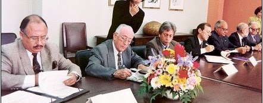
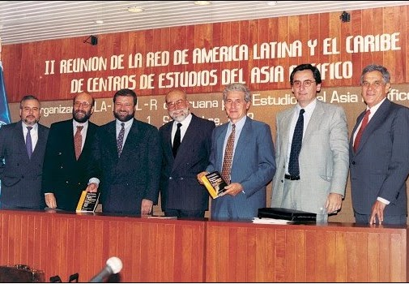
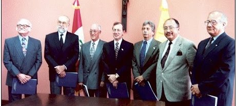
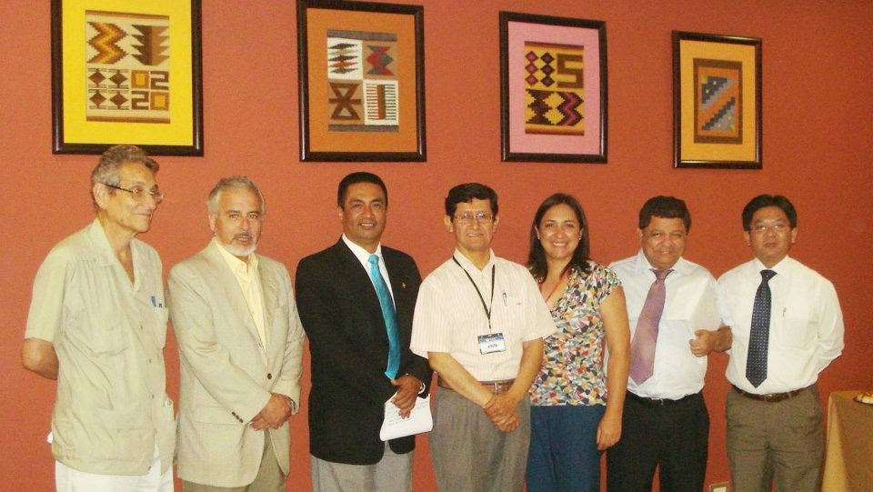

Legado histórico en el acercamiento al Asia-Pacífico.
Quién coordinó la red
La coordinación pasa de una institución miembro a otra. Estas son las que figuran en el archivo de la red, que todavía se está completando.
2013, Universidad Nacional de Piura
En 2013 la coordinación de la red estuvo a cargo de la Universidad Nacional de Piura.
2019–2020, Universidad Peruana Cayetano Heredia
Coordinó la red en 2019 y hasta noviembre de 2020, cuando entregó la coordinación a la Universidad del Pacífico.
2020–2021, Universidad del Pacífico
Recibió la coordinación el 25 de noviembre de 2020 y la entregó a la Universidad de Lima en diciembre de 2021.
2021–2023, Universidad de Lima
Coordinó la red desde diciembre de 2021 hasta febrero de 2023, cuando la coordinación pasó a la Universidad ESAN.
2023, Universidad ESAN
Recibió la coordinación el 16 de febrero de 2023.
2025, Universidad Nacional Mayor de San Marcos
En 2025 la coordinación estuvo en el Centro de Estudios Asiáticos San Marcos (CEAS). En ese periodo se implementó la página web de la red en Google Sites.
2026, Universidad Nacional Agraria La Molina
En 2026, hasta agosto, la coordinación estuvo en la Universidad Nacional Agraria La Molina.
2026–2027, Pontificia Universidad Católica del Perú
Desde septiembre de 2026 la PUCP coordina la red por un año.
1997
Fundación de la REDAP
La Red Peruana para Estudios del Asia-Pacífico (REDAP) fue constituida gracias a un convenio de cooperación suscrito por prestigiosas universidades peruanas en el año 1997:
Pontificia Universidad Católica del Perú (PUCP)
Universidad Peruana Cayetano Heredia (UPCH)
Universidad del Pacífico (UP)
Universidad de Lima (UL)
Universidad ESAN (ESAN)
Universidad Nacional Agraria La Molina (UNALM)
Universidad Nacional de Ingeniería (UNI)
Estas instituciones reconocieron la necesidad de establecer una plataforma académica interinstitucional que fortalezca los vínculos entre el Perú y la región Asia-Pacífico a través de la docencia, la investigación y la cooperación.

Firma del convenio de creación de la REDAP. Lima, 7 de agosto de 1997.
1998
Adhesión de la Academia Diplomática del Perú
La Academia Diplomática del Perú «Javier Pérez de Cuéllar», institución formadora de los futuros diplomáticos del país, se incorporó a la REDAP en 1998, como reconocimiento a la creciente relevancia estratégica de la región Asia-Pacífico en la política exterior peruana.
Su adhesión reforzó el carácter multidisciplinario de la red al integrar una entidad especializada en relaciones internacionales, política exterior y diplomacia pública. Desde su incorporación, la Academia ha contribuido activamente al desarrollo de espacios académicos orientados a la formación de profesionales con conocimiento especializado sobre Asia-Pacífico, así como a la promoción del diálogo entre el mundo académico, el Estado y los organismos internacionales.

II Reunión de la Red de América Latina y el Caribe de Centros de Estudios del Asia Pacífico, 1998.

Reunión de la REDAP, 1998.
2005
Ingreso de nuevas universidades a la REDAP
En 2005, la REDAP amplió su base institucional con la incorporación de dos universidades de gran relevancia en el panorama académico nacional: la Universidad Nacional Mayor de San Marcos (UNMSM) y la Universidad de Piura.
La Universidad Nacional Mayor de San Marcos ingresó a la red con el objetivo de fortalecer las investigaciones y debates sobre Asia-Pacífico. Su participación ha contribuido a consolidar una mirada nacional sobre la región asiática, con énfasis en la inserción internacional del conocimiento generado desde la universidad pública.
Por su parte, la Universidad de Piura aportó una dimensión regional al sumar, desde el norte del país, una sólida trayectoria en economía y humanidades. Su adhesión respondió al interés de integrar enfoques aplicados y promover relaciones institucionales con universidades asiáticas, así como al compromiso de descentralizar el análisis académico sobre Asia-Pacífico en el Perú.

Reunión número 100 de la REDAP.
2008
Primera conferencia de centros APEC en el Perú e ingreso de nuevas universidades
En 2008, la REDAP continuó su expansión con la incorporación de la Universidad Nacional de Tumbes y la Universidad Peruana de Ciencias Aplicadas (UPC).
Este crecimiento coincidió con un momento clave en la agenda internacional del país: la presidencia peruana del foro APEC en 2008, año en el que se organizó por primera vez en el Perú la conferencia del Consorcio de Centros de Estudios APEC (ASCC). REDAP acompañó académicamente este contexto, generando espacios de reflexión y análisis desde la universidad sobre los desafíos de integración económica y política en Asia-Pacífico.